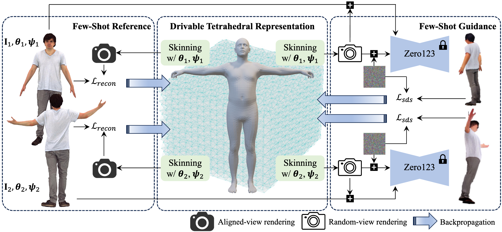

HAVE-FUN:
Human Avatar Reconstruction from Few-Shot Unconstrained Images
arXiv 2023
- Xihe Yang 1,2*
- Xingyu Chen 1*
- Shaohui Wang 1,4
- Daiheng Gao 5
- Xiaoguang Han 2,3
- Baoyuan Wang 1
- 1 Xiaobing.AI
- 2 SSE, CUHKSZ
- 3 FNii, CUHKSZ
- 4 Tsinghua University
- 5 Freelancer
- * These authors contributed equally to this work


Given a few images with various viewpoints and articulated poses, our approach can reconstruct an animatable human avatar.
Abstract
For human avatar reconstruction, contemporary techniques commonly necessitate the acquisition of costly data and struggle to achieve satisfactory results from a small number of casual images. In this paper, we investigate this task from a few-shot unconstrained photo album. The reconstruction of human avatars from such data sources is challenging because of limited data amount and dynamic articulated poses. For handling dynamic data, we integrate a skinning mechanism with deep marching tetrahedra (DMTet) to form a drivable tetrahedral representation, which drives arbitrary mesh topologies generated by the DMTet for the adaptation of unconstrained images. To effectively mine instructive information from few-shot data, we devise a two-phase optimization method with few-shot reference and few-shot guidance. The former focuses on aligning avatar identity with reference images, while the latter aims to generate plausible appearances for unseen regions. Overall, our framework, called HaveFun, can undertake avatar reconstruction, rendering, and animation. Extensive experiments on our developed benchmarks demonstrate that HaveFun exhibits substantially superior performance in reconstructing the human body and hand. Our models and datasets will be made publicly available.
Overview

Overview of HaveFun framework. Based on the DMTet, we design a driveable tetrahedral representation with the skinning mechanism. In terms of optimization, we employ loss functions based on reference-data reconstruction and SDS guidance to create human avatars from few-shot unconstrained images.
Comparisons with Prior Arts
Compariosn body reconstruction with SelfRecon (CVPR2022) and TeCH (3DV24) on FS-XHumans dataset
Body animation results on FS-XHumans dataset
Compariosn hand reconstruction with SelfRecon (CVPR2022) on FS-DART dataset
Hand animation results on FS-DART dataset
Human body reconstruction beyond datasets
Hand reconstruction beyond datasets
Citation
@article{bib:havefun,
title={HAVE-FUN: Human Avatar Reconstruction from Few-Shot Unconstrained Images},
author={Yang, Xihe and Chen, Xingyu and Gao, Daiheng and Han, Xiaoguang and Wang, Baoyuan},
journal={arXiv:},
year={2023}
}
Acknowledgements
We thank Yu Deng for the fruitful advice and discussion to improve the paper.
The website template was adapted from GRAM.